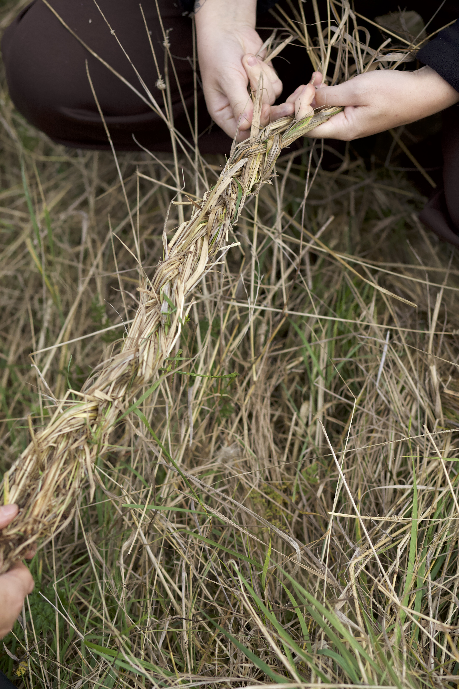
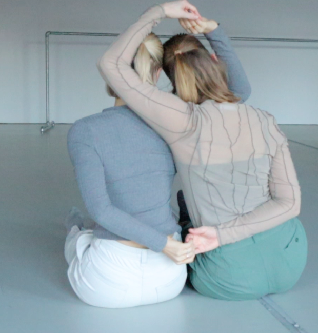
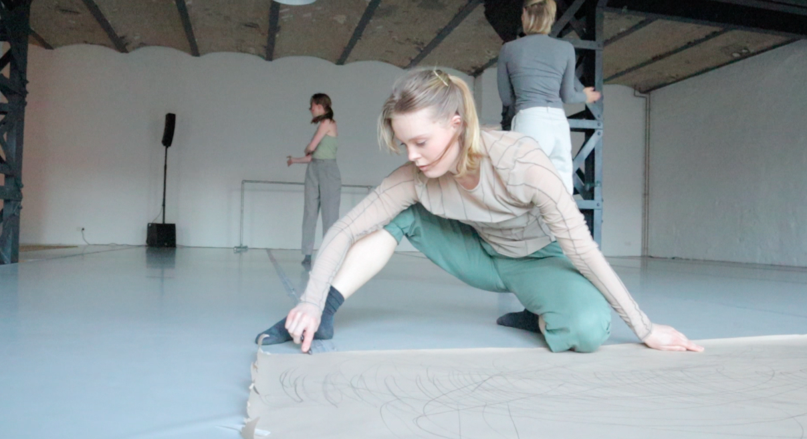
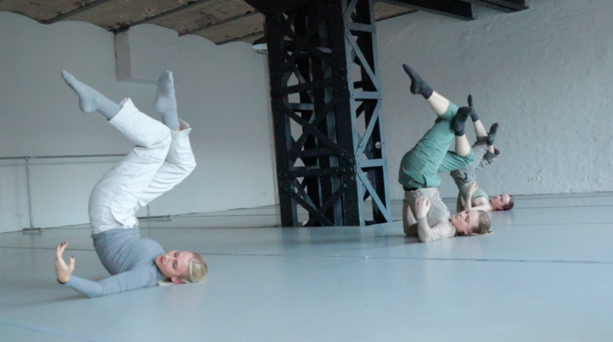
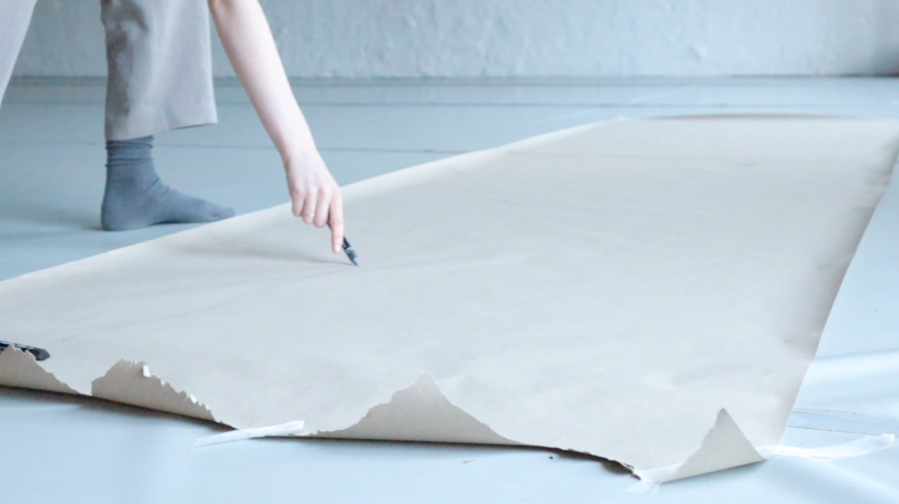
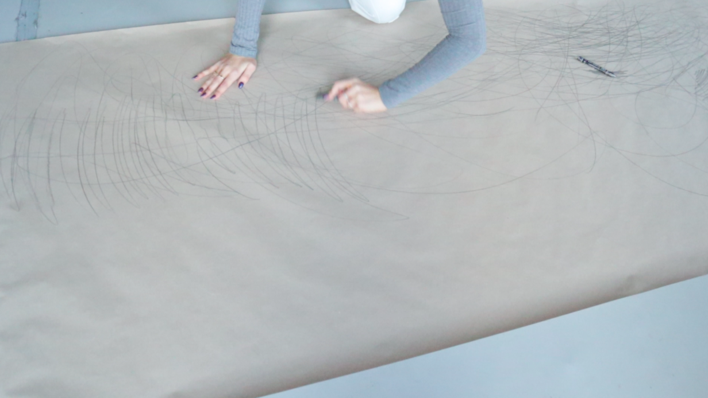

Form (2025)
Oil on canvas, 70 × 80 cm
ABOUT PETRA

Petra Jansson is a movement and visual artist from Sweden whose practice unfolds at the intersection of performance, dance, sculpture, painting and installation. Their work explores natural materials through looking at that the body as an entity of nature in conversation with the world around us. Through sculpture and installation their work builds community and practices where bodies meet as a form of connection to ourselves, others, the sounds around, and the textures we feel.
Delving into questions of queerness, identity and community, Petra connects the practice of deep listening, sensing and improvisation in their artwork. Aiming to convey nature as a part of us, seeing a close connection between humans and the earth, they encourage people to love and protect the nature we are in.
Petra received their BA in Creative Arts Contemporary Dance at Trinity Laban Conservatoire of Music and Dance (2021). Additionally they have completed courses such as Sustainable Development (2018), Gender Studies (2021, 2022), Indigenous Feminism (2022), Feminist Postcolonial and Critical Race Studies (2023), and Queer Studies (2023).
The art of movement.
A VISUAL JOURNEY


Breath and Soil is a site-specific art installation and performance consisting of a large metal sculpture built in nature where the dancers move through space, seeing the air, clouds, soft soil, and tall grass through soft fabric covering hard metal.



Hay is a performance solo where actions of braiding, weaving, building, and layering hay becomes a place for deep listening. A place where the body is allowed to sense, listen, be present, letting the knowledge of the natural fibers be absorbed into the skin.
The braiding invites reflections of the value in things we often can overlook. Grass is often viewed as not so important, something easily forgotten but it is actually something essential to our environment. The braiding can therefore become an action of care, of care to the soil, the earth, each other and to ourselves.
The work allows the natural materials experiences be sensed through the skin. The material and the body being in a constant motion conversing through touch.
In Notes Between Three the act of note-taking is broken down into concrete action and let into conversation. It draws on how to document the past and what we bring into text. How does notes change, transform? Can it let us know where our body is in space in relation to others if we write while we think? Can we remember the text through our hands? Can the text be absorbed into the paper and left to simmer?
Through repetitive rhythm of pens on paper the piece shows how sound can transform into documentation of our own experiences. Experiences that are then shared collectively between the dancers and the viewer in the space.
Choreography, dance, & music: Petra Jansson, Emilie Bard, Hannah Wallace.






Oil on canvas, 70 × 80 cm

Oil on canvas

Oil on canvas, 50 × 60 cm

Sculpture metal and natural materials 2x1m (2026)
GET IN TOUCH
For inquiries, collaborations, or simply to say hello, you can find me here.